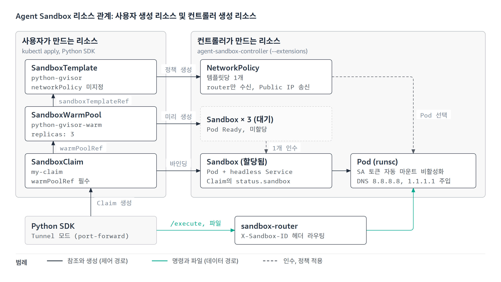
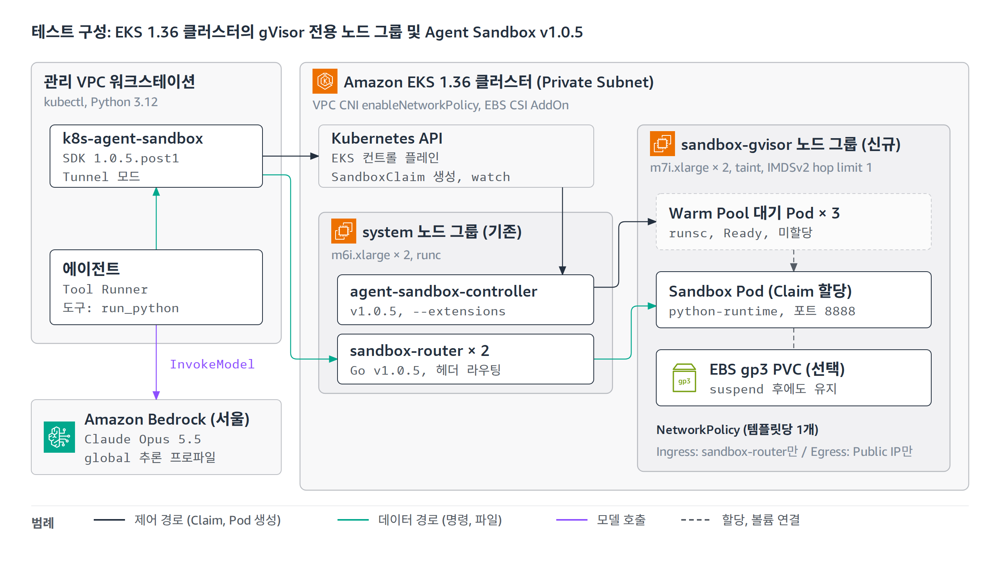
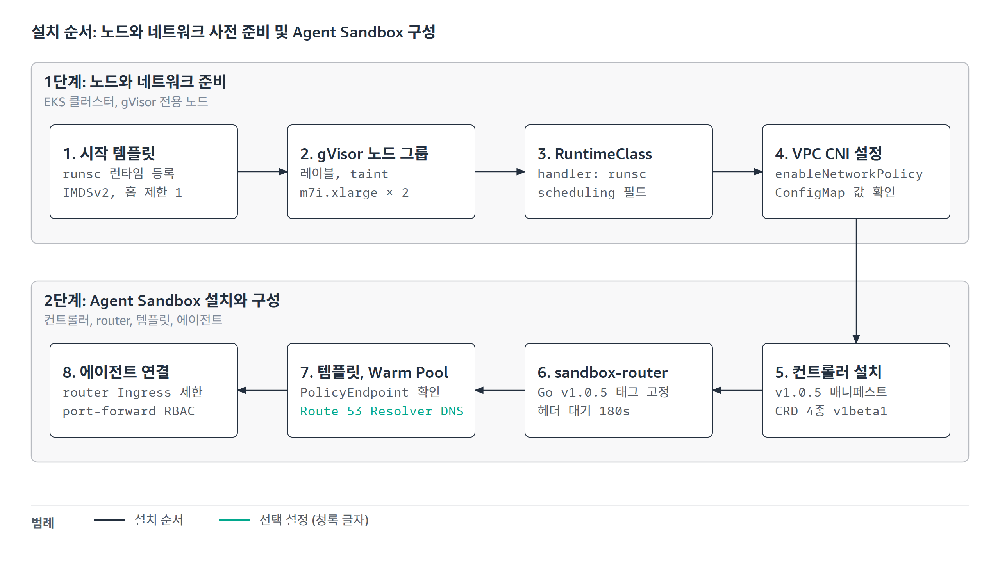
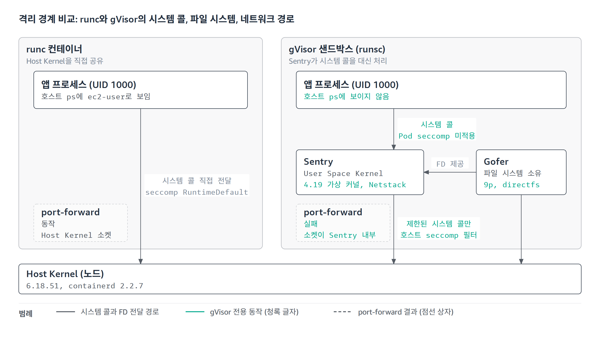
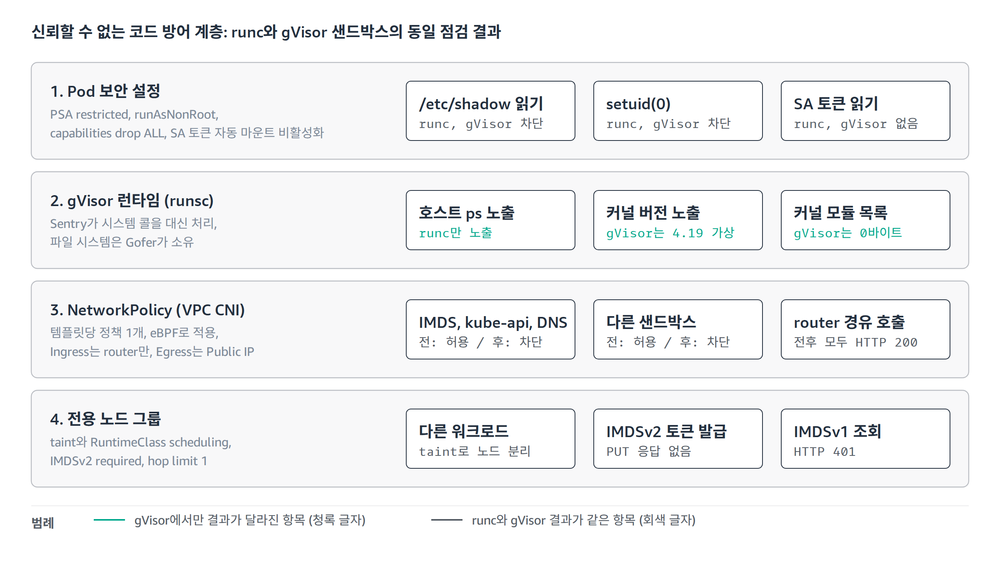

모델이 생성한 코드를 Amazon EKS에서 실행할 때 어느 계층이 무엇을 막는지 확인합니다. 점검한 네 항목 중 세 항목은 gVisor가 아니라 PodSpec의 보안 설정과 컨트롤러 기본값이 막았고 호스트에서 점검 프로세스가 보이는 것만 gVisor가 막았습니다. 따라서 gVisor를 도입하더라도 Pod 보안 설정은 그대로 갖춰야 합니다.This post checks which layer blocks what when model-generated code runs on Amazon EKS. Of the four items checked, three were blocked by the PodSpec security settings and the controller defaults rather than by gVisor, and gVisor blocked only the visibility of the check process from the host. So even if you adopt gVisor, you must keep the Pod security settings in place.
조직 안에서 AI 에이전트를 만드는 구성원이 빠르게 늘고 있습니다. 여러 팀이 각자 목적에 맞는 에이전트를 만들고 이 에이전트들은 EKS 클러스터의 Pod에서 모델이 생성한 코드를 자유롭게 실행합니다. 편리한 만큼, 검증되지 않은 코드가 공용 클러스터의 노드와 자격 증명 바로 옆에서 실행된다는 뜻이기도 합니다.
조직 내에서 코드를 작성하고 실행하는 AI 에이전트를 Amazon EKS에 올리려면 두 가지 설계 원칙을 고려해야 합니다. 첫째, 모델이 생성한 코드의 호스트 커널 접근을 중재하고 IAM 자격 증명과 클러스터 내부 서비스에 대한 접근을 제한해야 합니다. 둘째, 격리에 따른 샌드박스 기동과 실행 비용을 측정하고 이를 줄이는 방법을 함께 설계해야 합니다.
이 글은 Kubernetes SIG Apps의 Agent Sandbox v1.0.5와 gVisor를 EKS 1.36 클러스터에 구성하고 runc 샌드박스와 gVisor 샌드박스에서 동일한 보안 점검과 성능 측정을 수행해 그 결과를 비교합니다. 1부에서는 Agent Sandbox의 구조와 설치 순서, 그리고 신뢰할 수 없는 코드를 막는 격리 계층을 다룹니다. 2부에서는 NetworkPolicy와 DNS, Warm Pool, 격리 비용, 수명 주기, 에이전트 연동처럼 운영 환경에 올릴 때 확인할 내용을 다룹니다.
시리즈 블로그 보기
01
Agent Sandbox는 AI 에이전트가 생성한 코드를 실행할 격리 환경을 Kubernetes 위에서 선언형으로 관리하기 위한 오픈소스 프로젝트입니다. Kubernetes SIG Apps가 관리하며 2026년 3월 Kubernetes 블로그에서 소개됐습니다. 핵심 아이디어는 두 가지입니다. 샌드박스 하나를 Sandbox라는 커스텀 리소스로 표현해 수명 주기를 컨트롤러가 관리하게 합니다. 강한 격리는 RuntimeClass로 지정하는 gVisor나 Kata Containers 같은 런타임에 맡깁니다.
에이전트의 실행 환경은 일반적인 웹 서버와 성격이 다릅니다. 세션마다 하나씩 필요한 상태 있는 단일 인스턴스이고 대부분의 시간은 유휴 상태이며 무엇보다 신뢰할 수 없는 코드를 실행합니다. 이런 워크로드는 StatefulSet(replicas: 1), headless Service, PersistentVolumeClaim을 조합해 구성할 수 있지만 규모가 커지면 운영이 어려워집니다. Agent Sandbox는 이 조합을 하나의 API로 묶고 그 위에 세 가지 확장 리소스를 얹습니다. SandboxTemplate(Pod 명세와 보안 기본값을 담은 샌드박스 템플릿), Warm Pool(미리 띄워 둔 대기 Sandbox의 풀), SandboxClaim(Warm Pool에서 Sandbox 하나를 할당받는 요청)입니다.
| 리소스 | API 그룹 | 역할 |
|---|---|---|
| Sandbox | agents.x-k8s.io/v1beta1 | 단일 Pod, 선택적 headless Service, PVC의 수명 주기(만료, suspend/resume) |
| SandboxTemplate | extensions.agents.x-k8s.io/v1beta1 | Pod 명세와 보안 기본값, 템플릿당 NetworkPolicy 1개 |
| SandboxWarmPool | extensions.agents.x-k8s.io/v1beta1 | 템플릿으로 미리 띄워 둔 대기 Sandbox의 개수(replicas) |
| SandboxClaim | extensions.agents.x-k8s.io/v1beta1 | Warm Pool에서 Sandbox 하나를 할당받는 요청(warmPoolRef 필수) |
| sandbox-router | Deployment | X-Sandbox-ID 헤더로 요청을 해당 Sandbox Pod에 전달하는 리버스 프록시 |
표 1. Agent Sandbox v1.0.5의 리소스와 구성 요소 (CRD 4종은 모두 v1beta1)
SandboxClaim은 템플릿을 직접 참조하지 않고 항상 Warm Pool을 참조합니다. replicas: 0인 Warm Pool에 Claim을 걸면 대기 Pod 없이 새 Sandbox를 만드는 Cold Start (콜드 스타트)가 됩니다. 덕분에 같은 템플릿으로 Cold Start와 Warm Pool을 공정하게 비교할 수 있습니다. 클라이언트는 Python SDK(k8s-agent-sandbox)로 Claim을 만들고 명령 실행과 파일 입출력은 sandbox-router를 거칩니다. 리소스 사이의 참조 관계와 요청 경로는 그림 1과 같습니다.

02
핵심 전제는 Managed Node Group(관리형 노드 그룹)을 사용할 수 있는 EKS 클러스터입니다. 그 이유는 gVisor 전용 노드 그룹을 만드는 파트에서 설명합니다.
| 항목 | 이 테스트에서 사용한 값 | 비고 |
|---|---|---|
| EKS 클러스터 | 1.36, Managed Node Group 기반 | Auto Mode 아님 |
| 로컬 도구 | kubectl 1.36, AWS CLI 2.33, Python 3.12 | SDK는 Python 3.11 이상 필요 |
| 클러스터 AddOn | VPC CNI, EKS Pod Identity Agent, EBS CSI | VPC CNI는 NetworkPolicy, Pod Identity Agent는 EBS CSI 컨트롤러 권한, EBS CSI는 2부의 수명 주기 파트에서 추가 |
| IAM 권한 | EKS, EC2, IAM, SSM | 노드 그룹 생성과 노드 점검에 필요 |
| Agent Sandbox | v1.0.5 | 컨트롤러, sandbox-router, Python SDK(k8s-agent-sandbox==1.0.5.post1) |
표 2. 테스트 환경과 사전 준비 (버전은 2026년 10월 기준)
테스트 환경의 전체 구성은 그림 2와 같습니다. 워크스테이션의 에이전트는 Amazon Bedrock을 호출하고 SDK는 Kubernetes API로 SandboxClaim을 만듭니다. 모델이 생성한 명령은 sandbox-router를 거쳐 gVisor 전용 노드의 샌드박스 Pod에서만 실행됩니다.

샌드박스 Pod는 모두 Private Subnet에 배치했고 테스트는 외부 노출 없이 kubectl port-forward와 VPC 내부 경로만 사용했습니다. 에이전트 UI를 외부에 공개한다면 Amazon CloudFront, Application Load Balancer, 에이전트 Pod 순서로 연결하고 샌드박스와 router는 노출하지 않습니다.
03
전체 설치는 노드와 네트워크를 먼저 준비하고 Agent Sandbox를 설치한 뒤 샌드박스를 구성하는 순서로 진행합니다. 순서가 중요한 이유는 두 가지입니다. RuntimeClass와 템플릿이 Pod를 배치할 gVisor 전용 노드가 먼저 준비되어 있어야 하고 VPC CNI의 NetworkPolicy를 활성화하지 않은 채 샌드박스를 실행하면 템플릿이 만든 정책이 적용되지 않기 때문입니다. 그림 3과 표 3에 이 글에서 사용한 설치 순서와 단계별 핵심 설정을 정리했습니다. 7단계와 8단계의 세부 내용은 2부에서 다룹니다.

| 순서 | 단계 | 핵심 설정 | 확인 방법 |
|---|---|---|---|
| 1 | 시작 템플릿 작성 | nodeadm NodeConfig로 runsc 등록, gVisor 번들 sha512 검증, IMDSv2 필수와 홉 제한 1 | 노드 그룹 생성 후 함께 확인 |
| 2 | gVisor 전용 노드 그룹 생성 | sandbox-runtime=gvisor 레이블, NoSchedule taint | 노드 그룹 ACTIVE, Run Command로 runsc 등록과 IMDS 옵션 확인 |
| 3 | RuntimeClass 생성 | handler: runsc, scheduling의 nodeSelector와 toleration | runtimeClassName: gvisor Pod가 gVisor 노드에 배치되는지 확인 |
| 4 | VPC CNI NetworkPolicy 활성화 | enableNetworkPolicy: "true" | AddOn configurationValues의 enableNetworkPolicy, amazon-vpc-cni ConfigMap의 enable-network-policy-controller가 true |
| 5 | Agent Sandbox 컨트롤러 설치 | sandbox-with-extensions.yaml v1.0.5 | CRD 4종 v1beta1, --extensions 플래그 |
| 6 | sandbox-router 배포 | Go 구현, 이미지 v1.0.5 고정, --response-header-timeout=180s | router Deployment의 이미지와 인자 |
| 7 | SandboxTemplate, Warm Pool 생성 | runtimeClassName: gvisor, 필요하면 Route 53 Resolver용 사용자 정의 networkPolicy와 EBS CSI AddOn | Warm Pool 대기 Pod Ready, 템플릿당 PolicyEndpoint 1개 |
| 8 | router 접근 제한, 에이전트 연결 | router 8080 포트 Ingress를 에이전트 네임스페이스 레이블로 제한, port-forward 권한은 RBAC로 제한. 클러스터 안의 에이전트는 Direct 연결, 이 테스트의 워크스테이션은 Tunnel 모드 | 레이블 없는 네임스페이스에서 router 연결 차단 |
표 3. 설치 순서와 단계별 확인 항목
예제 범위: 아래 코드는 설치의 핵심 설정을 발췌한 것입니다. 전체 환경을 재현하려면 gVisor 설치와 검증 셸 스크립트를 포함한 MIME 사용자 데이터와 시작 템플릿의 메타데이터 옵션이 추가로 필요합니다. 비교용 Sandbox와 SandboxTemplate, Warm Pool의 전체 매니페스트, router 배포 설정도 필요합니다. 이 글에는 해당 전체 파일이 포함되어 있지 않습니다.
04
gVisor를 사용하려면 노드의 containerd에 runsc 런타임을 등록해야 합니다. 그런데 EKS Auto Mode 노드는 사용자 지정 AMI를 지원하지 않고 노드에 소프트웨어를 직접 설치할 수도 없어 이 등록이 불가능합니다. 그래서 Managed Node Group 기반 클러스터에 gVisor 전용 노드 그룹을 추가했습니다. Auto Mode 클러스터에도 Managed Node Group을 함께 둘 수는 있지만 그 노드를 위해 VPC CNI, kube-proxy, CoreDNS AddOn을 별도로 설치해야 합니다. Karpenter를 직접 설치해 운영하는 클러스터라면 Managed Node Group 대신 Karpenter로도 같은 노드를 구성할 수 있습니다. EC2NodeClass의 userData는 Karpenter가 생성하는 사용자 데이터에 병합되므로 AL2023의 NodeConfig로 runsc를 등록할 수 있습니다. NodePool에 같은 레이블과 taint를 지정하면 RuntimeClass도 그대로 사용합니다. 단, EKS Auto Mode에 내장된 Karpenter는 노드 사용자 데이터를 바꿀 수 없어 해당하지 않습니다.
Amazon Linux 2023 노드에서는 nodeadm이 사용자 데이터의 NodeConfig를 containerd 설정에 병합합니다. 시작 템플릿의 사용자 데이터는 MIME multipart 형식으로 작성해 두 부분으로 나눴습니다. 첫 번째 부분은 NodeConfig로 runsc 런타임을 등록하고 두 번째 부분인 셸 스크립트는 버전을 고정한 gVisor 번들(release-20260928.0)을 sha512로 검증한 뒤 /usr/local/bin에 설치합니다. 테스트에 사용한 AMI의 containerd는 2.x(설정 버전 3)라 io.containerd.cri.v1.runtime 경로를 사용했습니다. containerd 1.x는 플러그인 경로가 다르므로 AMI의 containerd 버전에 맞춰야 합니다.
# userdata.mime의 첫 번째 부분 (Content-Type: application/node.eks.aws)
apiVersion: node.eks.aws/v1alpha1
kind: NodeConfig
spec:
containerd:
config: |
[plugins.'io.containerd.cri.v1.runtime'.containerd.runtimes.runsc]
runtime_type = 'io.containerd.runsc.v1'시작 템플릿에는 인스턴스 메타데이터 서비스(IMDS)의 v2 필수 설정과 응답 홉 제한 1을 명시합니다. EKS 모범 사례 가이드에 따르면 이 두 설정은 Pod가 노드의 인스턴스 프로파일에 접근하지 못하게 합니다. 테스트 클러스터의 기존 노드는 홉 제한이 2였으므로 새 노드 그룹에서는 이 값을 반드시 명시해야 합니다. 노드 그룹에는 sandbox-runtime=gvisor 레이블과 NoSchedule taint를 붙입니다.
aws eks create-nodegroup --cluster-name "$CLUSTER_NAME" --nodegroup-name sandbox-gvisor \
--node-role "$NODE_ROLE_ARN" --subnets $PRIVATE_SUBNETS \
--ami-type AL2023_x86_64_STANDARD --instance-types m7i.xlarge \
--scaling-config minSize=0,maxSize=3,desiredSize=2 \
--release-version 1.36.4-20260930 \
--launch-template name=sandbox-gvisor-lt,version=1 \
--labels sandbox-runtime=gvisor \
--taints key=sandbox-runtime,value=gvisor,effect=NO_SCHEDULERuntimeClass의 scheduling 필드에 nodeSelector와 toleration을 넣으면 runtimeClassName: gvisor를 지정한 Pod가 gVisor 전용 노드 그룹에 배치됩니다. 템플릿마다 이 설정을 반복할 필요도 없습니다. 다만 이 설정이 다른 런타임의 Pod를 모두 차단하지는 않습니다. 같은 taint를 허용하는 toleration을 가진 runc Pod도 해당 노드에 배치될 수 있습니다. 전용 노드 사용을 강제하려면 Pod 생성 권한과 허용할 RuntimeClass와 toleration에 대한 admission 정책을 함께 관리해야 합니다.
apiVersion: node.k8s.io/v1
kind: RuntimeClass
metadata: {name: gvisor}
handler: runsc
scheduling:
nodeSelector: {sandbox-runtime: gvisor}
tolerations:
- {key: sandbox-runtime, operator: Equal, value: gvisor, effect: NoSchedule}노드 그룹이 ACTIVE가 되기까지 약 2분이 걸렸습니다. 새로운 노드 2대는 containerd 2.2.7과 커널 6.18.51로 올라왔습니다. AWS Systems Manager Run Command로 점검하니 runsc가 설치되고 containerd 설정에 등록되어 있었습니다. IMDS 옵션도 의도대로 required와 홉 제한 1이었습니다.
05
Agent Sandbox의 기본 네트워크 격리는 SandboxTemplate이 만드는 NetworkPolicy에 의존합니다. NetworkPolicy는 CNI가 실제로 적용해야 효과가 있으므로 Amazon VPC CNI AddOn에서 enableNetworkPolicy를 먼저 활성화합니다. 테스트 클러스터는 이 값이 비어 있었고 AddOn 버전과 IRSA 역할은 그대로 둔 채 설정만 바꿨습니다. 활성화 여부는 AddOn의 configurationValues와 amazon-vpc-cni ConfigMap으로 확인합니다. 테스트에 사용한 VPC CNI AddOn v1.22.4-eksbuild.3은 aws-eks-nodeagent 컨테이너와 policyendpoints CRD를 활성화 전에도 배포했습니다. 비활성화 상태에서는 컨테이너가 하나라는 EKS 문서의 설명과 다르므로, 이 둘이 있다는 것만으로는 활성화됐다고 판단할 수 없습니다. 이 단계를 생략하면 어떤 일이 생기는지는 2부의 NetworkPolicy 파트에서 다룹니다.
Pod 시작 시점의 정책 적용: NetworkPolicy 기능 활성화와 시작 직후의 통신 차단은 별도 설정입니다. NETWORK_POLICY_ENFORCING_MODE=standard에서는 정책 적용 전까지 통신이 기본 허용됩니다. strict에서는 기본 차단으로 시작하며 DNS와 router 등 필요한 경로의 허용 정책을 준비해야 합니다. CoreDNS에도 필요한 정책이 있어야 하고 hostNetwork Pod에는 이 기본 차단이 적용되지 않습니다. 본문에는 시험 당시 enforcing mode 기록이 없어 Pod 시작 직후부터 격리가 유지됐다고 판단할 수 없습니다. 재현 시에는 aws-node DaemonSet의 해당 환경 변수와 실제 통신 결과를 함께 기록해야 합니다.
aws eks update-addon --cluster-name "$CLUSTER_NAME" --addon-name vpc-cni \
--addon-version v1.22.4-eksbuild.3 --service-account-role-arn <기존 IRSA 역할> \
--configuration-values '{"enableNetworkPolicy":"true"}' --resolve-conflicts PRESERVE
# 활성화 확인: 두 값이 모두 true여야 합니다
aws eks describe-addon --cluster-name "$CLUSTER_NAME" --addon-name vpc-cni \
--query addon.configurationValues --output text
kubectl -n kube-system get cm amazon-vpc-cni \
-o jsonpath='{.data.enable-network-policy-controller}'컨트롤러는 릴리스 매니페스트를 버전으로 고정해 설치합니다. Kubernetes 블로그의 Quick start가 안내하는 manifest.yaml 경로는 v1.x 릴리스에서 404를 반환하므로 sandbox-with-extensions.yaml을 사용합니다. 설치가 끝나면 CRD 4종이 모두 v1beta1로 등록되고 --extensions 플래그를 가진 컨트롤러 Deployment 하나가 남습니다.
kubectl apply --server-side -f \
https://github.com/kubernetes-sigs/agent-sandbox/releases/download/v1.0.5/sandbox-with-extensions.yamlsandbox-router는 기본 매니페스트가 사용하는 Go 구현을 택했고 업스트림 sandbox-router/deploy 매니페스트에서 두 가지만 바꿨습니다. 이미지 태그를 :latest에서 v1.0.5로 고정하고 --response-header-timeout=180s를 추가했습니다. Go router는 기본 매니페스트의 --proxy-timeout=180s와 별개로 응답 헤더를 30초까지만 기다립니다. 샌드박스의 /execute는 명령이 끝나야 응답 헤더를 보내므로, 이 값을 늘리지 않으면 45초짜리 명령이 30초에 502로 끊깁니다. 빌드나 테스트처럼 오래 걸리는 명령을 실행한다면 이 플래그를 함께 늘려야 합니다.
06
먼저 템플릿 없이 core Sandbox 두 개의 런타임을 달리해 비교합니다. 두 Pod 모두 Pod Security Admission의 restricted 수준을 따릅니다. UID 1000으로 실행되고 모든 capability를 제거했으며 루트 파일 시스템은 읽기 전용입니다. hello-gvisor에는 runtimeClassName: gvisor를 지정하고 hello-runc에는 전용 노드의 taint를 허용하는 toleration을 붙입니다. toleration만으로 동일 노드 배치가 보장되지는 않으므로, 재현 시에는 두 Pod의 nodeSelector에 같은 kubernetes.io/hostname 값을 지정하고 생성 후 spec.nodeName이 일치하는지 확인해야 합니다. 두 Pod가 Ready가 되면 각 샌드박스 안에서 커널, CPU 수, seccomp 상태, 커널 모듈 목록을 확인합니다.
| 관찰 항목 | runc | gVisor |
|---|---|---|
uname -r | 6.18.51-120.162.amzn2023 (Host Kernel) | 4.19.0-gvisor |
| 컨테이너에 보이는 CPU, 메모리 | 4개, 16 GB (호스트 전체) | CPU 2개 (quota 기준, 최솟값 2), 메모리 1 GiB (limit 기준) |
/proc/modules | 2,869바이트 (호스트 모듈 목록) | 0바이트 |
| 루트 파일 시스템 | overlay, 호스트 스냅샷 경로 노출 | 9p 마운트 (Gofer 소유, directfs) |
호스트 ps에서 앱 프로세스 | 보임 (UID 1000이 노드의 ec2-user로 표시) | 보이지 않음 (runsc-sandbox, runsc-gofer만 표시) |
kubectl port-forward pod/... | 동작 | 실패 |
| Ready까지 걸린 시간 (이미지 캐시 후) | 2.7초 | 2.7초 |
표 4. 동일한 보안 설정으로 런타임을 달리한 두 Sandbox의 관찰 결과
표 4는 본문에 기록된 관찰값입니다. 동일 노드 배치를 입증하는 Pod 명세와 spec.nodeName 출력은 제시되어 있지 않습니다. 기동 시간의 반복 횟수, 측정 시작과 종료 기준, 통계값 종류도 제시되어 있지 않습니다. 따라서 2.7초를 평균이나 중앙값으로 해석하거나 두 런타임의 기동 성능이 같다는 결론으로 일반화하지 않습니다.
그림 4는 두 런타임에서 시스템 콜, 파일 시스템, 네트워크가 지나는 경로를 비교합니다.

이번 환경에서는 gVisor 내부의 앱 프로세스가 호스트의 일반 앱 프로세스로 표시되지 않았습니다. 사용자 공간 커널인 Sentry가 애플리케이션 시스템 콜을 처리하며 호출을 호스트 커널에 그대로 전달하지 않습니다. 다만 Sentry 자체는 동작에 필요한 제한된 호스트 시스템 콜을 사용합니다. 컨테이너 파일 시스템은 별도 프로세스인 Gofer가 소유합니다. kubectl port-forward가 실패하는 이유도 같은 구조에서 나옵니다. containerd는 Pod의 네트워크 네임스페이스에서 localhost:8888에 연결을 시도합니다. 그러나 gVisor는 Sentry 안의 사용자 공간 네트워크 스택에서 대기하므로 호스트 쪽에는 연결을 받을 소켓이 없습니다. SDK의 Tunnel 모드가 동작하는 이유는 샌드박스 Pod 대신 runc로 실행되는 router Service로 터널을 열기 때문입니다. 따라서 이 실패는 Sentry 네트워크 스택의 부작용일 뿐 접근 통제가 아닙니다. router로 port-forward하면 같은 샌드박스에 그대로 도달합니다.
seccomp 결과도 달랐습니다. runc 컨테이너의 /proc/self/status는 Seccomp: 2(RuntimeDefault 적용)였지만 gVisor 안에서는 0으로 보였습니다. runsc 설정의 --oci-seccomp 플래그는 기본값이 false라서 Pod의 seccomp 프로파일이 샌드박스 내부에 적용되지 않습니다. 대신 Sentry 프로세스 자체가 호스트 쪽의 제한된 seccomp 환경에서 실행됩니다. Pod Security Admission의 seccomp 요건은 충족하지만 필터가 걸리는 경계가 runc와 다르다는 점은 보안 검토 시 인지해 두시기를 권고드립니다.
07
이제 Python SDK로 Warm Pool에서 샌드박스를 할당받아 신뢰할 수 없는 코드를 실행합니다. 런타임별로 replicas: 3인 Warm Pool과 replicas: 0인 Cold Start용 풀을 하나씩 두었습니다. 점검 스크립트는 devopscube 튜토리얼이 공개한 untrusted-code.py를 원본 그대로 사용했습니다. 이 스크립트는 /etc/shadow 읽기, setuid(0) 호출, ServiceAccount 토큰 읽기를 시도한 뒤 45초 동안 대기해 호스트에서 자신이 보이는지 확인할 시간을 줍니다.
아래 예제는 router와 두 Warm Pool이 준비된 환경을 전제로 합니다. 참조한 튜토리얼의 untrusted-code.py를 로컬 작업 디렉터리에 저장한 다음, 그 내용을 읽어 샌드박스로 전송합니다.
from pathlib import Path
from k8s_agent_sandbox import SandboxClient
from k8s_agent_sandbox.models import SandboxLocalTunnelConnectionConfig
code = Path("untrusted-code.py").read_text(encoding="utf-8")
client = SandboxClient(connection_config=SandboxLocalTunnelConnectionConfig()) # Tunnel 모드
for pool in ["python-runc-warm", "python-gvisor-warm"]:
sandbox = client.create_sandbox(warmpool=pool, namespace="sandbox-lab")
try:
sandbox.files.write("untrusted-code.py", code)
print(sandbox.commands.run("python3 untrusted-code.py", timeout=90).stdout)
finally:
sandbox.terminate()스크립트가 대기하는 사이 노드에서 해당 프로세스가 보이는지는 Systems Manager Run Command로 확인했습니다.
| 점검 | runc | gVisor | 막은 계층 |
|---|---|---|---|
/etc/shadow 읽기 | 차단 | 차단 | 파일 접근 권한, 비루트 UID와 GID, capability 제한 |
setuid(0) | 차단 | 차단 | 비루트 UID와 CAP_SETUID를 포함한 capability 제거 |
| ServiceAccount 토큰 읽기 | 파일 없음 | 파일 없음 | 템플릿 컨트롤러의 automountServiceAccountToken: false 기본값 |
| 호스트에서 점검 프로세스 확인 | 보임 | 보이지 않음 | gVisor |
표 5. 동일한 점검 스크립트의 런타임별 실행 결과
runAsNonRoot는 비루트 실행을 요구하고 runAsUser: 1000은 실행 UID를 지정합니다. /etc/shadow 읽기는 파일 소유권과 권한, 프로세스의 UID, GID, capability에 좌우됩니다. 이 실험의 setuid(0) 실패는 비루트 실행과 CAP_SETUID를 포함한 capability 제거를 함께 보아야 합니다. allowPrivilegeEscalation: false는 NoNewPrivs를 설정해 setuid 실행 파일 등을 통한 추가 권한 획득을 제한하는 별도 보강입니다. 단일 점검 결과만으로 각 설정의 기여도를 분리해 입증한 것은 아닙니다.
이번 점검은 기본 권한 제한과 런타임별 노출 차이를 확인합니다. 호스트의 프로세스 목록에서 앱이 보이지 않는다는 관찰만으로 격리의 안전성을 입증하지는 않으며 컨테이너 탈출 취약점이나 호스트 커널 공격에 대한 검증은 포함하지 않습니다.
네 항목 중 세 항목은 gVisor가 아닌 PodSpec의 보안 설정이 막았고 runc에서도 결과가 같았습니다. ServiceAccount 토큰은 템플릿에 명시하지 않았는데도 마운트되지 않았습니다. SandboxTemplate을 거쳐 만든 Pod에는 컨트롤러가 automountServiceAccountToken: false를 기본값으로 넣기 때문입니다. gVisor는 Sentry를 통해 애플리케이션의 시스템 콜을 중재하고 호스트 커널에 직접 노출되는 공격 표면을 줄입니다. 그림 5에 4개 계층과 계층별로 막힌 항목을 정리했습니다.

08
1부에서는 첫 번째 설계 원칙인 격리를 계층별로 확인했습니다. 이번 점검에서 Pod 보안 설정과 컨트롤러 기본값은 권한 변경과 파일, 토큰 접근 시도를 제한했습니다. gVisor는 앱의 시스템 콜을 중재해 호스트 커널에 대한 직접 노출을 줄입니다. 시험한 네 항목 중 세 항목은 gVisor가 아니라 PodSpec의 보안 설정과 컨트롤러 기본값이 보호했기 때문에, gVisor를 도입하더라도 Pod 보안 설정은 그대로 갖춰야 합니다. 나머지 두 계층인 NetworkPolicy와 전용 노드 그룹의 IMDS 설정은 설치 단계에서 준비해 두었습니다.
2부에서는 이 두 계층이 실제로 어떻게 동작하는지 확인하고 두 번째 설계 원칙인 격리 비용과 그 상쇄 방법을 측정 결과로 살펴봅니다. 에이전트를 Amazon Bedrock과 연결했을 때의 역할 분리와 sandbox-router 보안도 함께 다룹니다.
The number of people building AI agents inside organizations is growing quickly. Teams build agents for their own purposes, and those agents freely run model-generated code in Pods on an EKS cluster. That convenience also means that unverified code runs right next to the nodes and credentials of a shared cluster.
Running AI agents that write and execute code on Amazon EKS inside an organization calls for two design principles. First, you must mediate the access that model-generated code has to the host kernel and restrict its access to IAM credentials and in-cluster services. Second, you must measure the sandbox startup and execution cost that isolation adds, and design ways to reduce that cost along with the isolation.
This post sets up Agent Sandbox v1.0.5 from Kubernetes SIG Apps and gVisor on an EKS 1.36 cluster, runs the same security checks and performance measurements in runc sandboxes and gVisor sandboxes, and compares the results. Part 1 covers the architecture of Agent Sandbox, the installation order, and the isolation layers that stop untrusted code. Part 2 covers what to verify before going to production, such as NetworkPolicy and DNS, warm pools, the cost of isolation, lifecycle, and agent integration.
Posts in this series
01
Agent Sandbox is an open source project for declaratively managing, on Kubernetes, the isolated environments that run code generated by AI agents. Kubernetes SIG Apps maintains it, and it was introduced on the Kubernetes blog in March 2026. It rests on two core ideas. Each sandbox is represented as a custom resource called Sandbox, so that a controller manages its lifecycle. Strong isolation is left to a runtime such as gVisor or Kata Containers, selected through a RuntimeClass.
An agent's execution environment differs in nature from a typical web server. It is a stateful single instance needed once per session, it is idle most of the time, and above all it runs untrusted code. You can build such a workload by combining a StatefulSet (replicas: 1), a headless Service, and a PersistentVolumeClaim, but it becomes hard to operate as the scale grows. Agent Sandbox wraps this combination in a single API and adds three extension resources on top of it. They are SandboxTemplate (a sandbox template that holds the Pod spec and security defaults), a warm pool (a pool of standby Sandboxes started in advance), and SandboxClaim (a request to be allocated one Sandbox from a warm pool).
| Resource | API group | Role |
|---|---|---|
| Sandbox | agents.x-k8s.io/v1beta1 | Lifecycle of a single Pod, an optional headless Service, and a PVC (expiry, suspend/resume) |
| SandboxTemplate | extensions.agents.x-k8s.io/v1beta1 | Pod spec and security defaults, one NetworkPolicy per template |
| SandboxWarmPool | extensions.agents.x-k8s.io/v1beta1 | Number of standby Sandboxes started in advance from a template (replicas) |
| SandboxClaim | extensions.agents.x-k8s.io/v1beta1 | Request to be allocated one Sandbox from a warm pool (warmPoolRef is required) |
| sandbox-router | Deployment | Reverse proxy that forwards a request to the matching Sandbox Pod based on the X-Sandbox-ID header |
Table 1. Resources and components of Agent Sandbox v1.0.5 (all four CRDs are v1beta1)
A SandboxClaim never references a template directly and always references a warm pool. A claim against a warm pool with replicas: 0 becomes a cold start, which creates a new Sandbox without a standby Pod. This makes it possible to compare cold starts and warm pools fairly with the same template. The client creates a claim with the Python SDK (k8s-agent-sandbox), and command execution and file I/O go through sandbox-router. Figure 1 shows how the resources reference each other and the path that requests take.
02
The key prerequisite is an EKS cluster where you can use managed node groups. The section on creating the dedicated gVisor node group explains why.
| Item | Value used in this test | Notes |
|---|---|---|
| EKS cluster | 1.36, based on managed node groups | Not Auto Mode |
| Local tools | kubectl 1.36, AWS CLI 2.33, Python 3.12 | The SDK requires Python 3.11 or later |
| Cluster add-ons | VPC CNI, EKS Pod Identity Agent, EBS CSI | VPC CNI for NetworkPolicy, Pod Identity Agent for the EBS CSI controller permissions, EBS CSI added in the lifecycle section of Part 2 |
| IAM permissions | EKS, EC2, IAM, SSM | Needed to create the node group and inspect the nodes |
| Agent Sandbox | v1.0.5 | Controller, sandbox-router, Python SDK (k8s-agent-sandbox==1.0.5.post1) |
Table 2. Test environment and prerequisites (versions as of October 2026)
Figure 2 shows the overall test setup. The agent on the workstation calls Amazon Bedrock, and the SDK creates a SandboxClaim through the Kubernetes API. Commands generated by the model go through sandbox-router and run only in sandbox Pods on the dedicated gVisor nodes.
All sandbox Pods were placed in private subnets, and the tests used only kubectl port-forward and paths inside the VPC, with nothing exposed externally. If you expose the agent UI externally, connect Amazon CloudFront, an Application Load Balancer, and the agent Pod in that order, and do not expose the sandboxes or the router.
03
The overall installation prepares the nodes and the network first, then installs Agent Sandbox, and then configures the sandboxes. The order matters for two reasons. The dedicated gVisor nodes where the RuntimeClass and the templates place Pods must be ready first, and if you run sandboxes without enabling NetworkPolicy in the VPC CNI, the policy that the template creates is not enforced. Figure 3 and Table 3 summarize the installation order used in this post and the key settings of each step. Part 2 covers the details of steps 7 and 8.
| Order | Step | Key settings | How to verify |
|---|---|---|---|
| 1 | Write the launch template | Register runsc with a nodeadm NodeConfig, verify the gVisor bundle with sha512, require IMDSv2 with a hop limit of 1 | Verified together after the node group is created |
| 2 | Create the dedicated gVisor node group | sandbox-runtime=gvisor label, NoSchedule taint | Node group is ACTIVE, runsc registration and IMDS options checked with Run Command |
| 3 | Create the RuntimeClass | handler: runsc, nodeSelector and toleration under scheduling | A Pod with runtimeClassName: gvisor is placed on a gVisor node |
| 4 | Enable NetworkPolicy in the VPC CNI | enableNetworkPolicy: "true" | enableNetworkPolicy in the add-on configurationValues and enable-network-policy-controller in the amazon-vpc-cni ConfigMap are true |
| 5 | Install the Agent Sandbox controller | sandbox-with-extensions.yaml v1.0.5 | Four CRDs at v1beta1, the --extensions flag |
| 6 | Deploy sandbox-router | Go implementation, image pinned to v1.0.5, --response-header-timeout=180s | Image and arguments of the router Deployment |
| 7 | Create the SandboxTemplate and warm pools | runtimeClassName: gvisor, and if needed a custom networkPolicy for Route 53 Resolver and the EBS CSI add-on | Warm pool standby Pods are Ready, one PolicyEndpoint per template |
| 8 | Restrict router access, connect the agent | Restrict Ingress on router port 8080 by the agent namespace label, and restrict port-forward permission with RBAC. Agents inside the cluster use a Direct connection, and the workstation in this test uses Tunnel mode | Router connections from a namespace without the label are blocked |
Table 3. Installation order and what to verify at each step
Scope of the examples: The code below is an excerpt of the key installation settings. To reproduce the full environment, you also need the MIME user data that includes the gVisor installation and verification shell script, and the metadata options of the launch template. You also need the full manifests of the comparison Sandboxes, the SandboxTemplate, and the warm pools, as well as the router deployment settings. This post does not include those complete files.
04
To use gVisor, you must register the runsc runtime with containerd on the node. However, EKS Auto Mode nodes do not support custom AMIs and do not let you install software directly on the node, so this registration is not possible. For that reason, I added a dedicated gVisor node group to a cluster based on managed node groups. An Auto Mode cluster can also have managed node groups alongside it, but you must separately install the VPC CNI, kube-proxy, and CoreDNS add-ons for those nodes. If you operate a cluster with Karpenter that you installed yourself, you can build the same nodes with Karpenter instead of a managed node group. The EC2NodeClass userData is merged into the user data that Karpenter generates, so you can register runsc with the AL2023 NodeConfig. If you set the same label and taint on the NodePool, the RuntimeClass works as is. Note that the Karpenter built into EKS Auto Mode cannot change the node user data, so this does not apply to it.
On Amazon Linux 2023 nodes, nodeadm merges the NodeConfig in the user data into the containerd configuration. I wrote the user data of the launch template in MIME multipart format and split it into two parts. The first part is a NodeConfig that registers the runsc runtime, and the second part is a shell script that verifies a version-pinned gVisor bundle (release-20260928.0) with sha512 and then installs it in /usr/local/bin. The AMI used in the test has containerd 2.x (configuration version 3), so I used the io.containerd.cri.v1.runtime path. containerd 1.x uses a different plugin path, so you must match the path to the containerd version of your AMI.
# First part of userdata.mime (Content-Type: application/node.eks.aws)
apiVersion: node.eks.aws/v1alpha1
kind: NodeConfig
spec:
containerd:
config: |
[plugins.'io.containerd.cri.v1.runtime'.containerd.runtimes.runsc]
runtime_type = 'io.containerd.runsc.v1'The launch template explicitly sets the instance metadata service (IMDS) to require v2 and sets the response hop limit to 1. According to the EKS Best Practices Guide, these two settings keep Pods from accessing the instance profile of the node. The existing nodes in the test cluster had a hop limit of 2, so you must set this value explicitly for the new node group. The node group gets the sandbox-runtime=gvisor label and a NoSchedule taint.
aws eks create-nodegroup --cluster-name "$CLUSTER_NAME" --nodegroup-name sandbox-gvisor \
--node-role "$NODE_ROLE_ARN" --subnets $PRIVATE_SUBNETS \
--ami-type AL2023_x86_64_STANDARD --instance-types m7i.xlarge \
--scaling-config minSize=0,maxSize=3,desiredSize=2 \
--release-version 1.36.4-20260930 \
--launch-template name=sandbox-gvisor-lt,version=1 \
--labels sandbox-runtime=gvisor \
--taints key=sandbox-runtime,value=gvisor,effect=NO_SCHEDULEWhen you put a nodeSelector and a toleration in the scheduling field of the RuntimeClass, Pods that specify runtimeClassName: gvisor are placed on the dedicated gVisor node group. You also do not need to repeat these settings in every template. However, this setting does not block all Pods that use other runtimes. A runc Pod with a toleration for the same taint can also be placed on those nodes. To enforce dedicated use of the nodes, you must manage Pod creation permissions together with an admission policy for the allowed RuntimeClass and tolerations.
apiVersion: node.k8s.io/v1
kind: RuntimeClass
metadata: {name: gvisor}
handler: runsc
scheduling:
nodeSelector: {sandbox-runtime: gvisor}
tolerations:
- {key: sandbox-runtime, operator: Equal, value: gvisor, effect: NoSchedule}The node group took about 2 minutes to become ACTIVE. The two new nodes came up with containerd 2.2.7 and kernel 6.18.51. A check with AWS Systems Manager Run Command showed that runsc was installed and registered in the containerd configuration. The IMDS options were also as intended, required with a hop limit of 1.
05
The default network isolation of Agent Sandbox depends on the NetworkPolicy that a SandboxTemplate creates. A NetworkPolicy takes effect only when the CNI actually enforces it, so start with the Amazon VPC CNI add-on and enable enableNetworkPolicy there. In the test cluster this value was empty, and I changed only this setting while leaving the add-on version and the IRSA role as they were. You can confirm whether it is enabled from the configurationValues of the add-on and the amazon-vpc-cni ConfigMap. The VPC CNI add-on used in the test, v1.22.4-eksbuild.3, deployed the aws-eks-nodeagent container and the policyendpoints CRD even before the feature was enabled. This differs from the EKS documentation, which says there is a single container when the feature is disabled, so the presence of these two alone does not tell you that it is enabled. The NetworkPolicy section of Part 2 covers what happens if you skip this step.
Policy enforcement at Pod startup: Enabling the NetworkPolicy feature and blocking traffic right after startup are separate settings. With NETWORK_POLICY_ENFORCING_MODE=standard, traffic is allowed by default until the policies are applied. With strict, Pods start with default deny, and you must prepare allow policies for the paths they need, such as DNS and the router. CoreDNS also needs the policies it requires, and this default deny does not apply to hostNetwork Pods. This post has no record of the enforcing mode at the time of the test, so it cannot conclude that isolation held from the moment the Pods started. When you reproduce this, you must record that environment variable of the aws-node DaemonSet together with the actual traffic results.
aws eks update-addon --cluster-name "$CLUSTER_NAME" --addon-name vpc-cni \
--addon-version v1.22.4-eksbuild.3 --service-account-role-arn <existing IRSA role> \
--configuration-values '{"enableNetworkPolicy":"true"}' --resolve-conflicts PRESERVE
# Verify activation: both values must be true
aws eks describe-addon --cluster-name "$CLUSTER_NAME" --addon-name vpc-cni \
--query addon.configurationValues --output text
kubectl -n kube-system get cm amazon-vpc-cni \
-o jsonpath='{.data.enable-network-policy-controller}'Install the controller from a release manifest pinned to a version. The manifest.yaml path given in the Quick start on the Kubernetes blog returns 404 for v1.x releases, so use sandbox-with-extensions.yaml. When the installation finishes, all four CRDs are registered at v1beta1 and a single controller Deployment with the --extensions flag remains.
kubectl apply --server-side -f \
https://github.com/kubernetes-sigs/agent-sandbox/releases/download/v1.0.5/sandbox-with-extensions.yamlFor sandbox-router, I chose the Go implementation that the default manifest uses and changed only two things in the upstream sandbox-router/deploy manifest. I pinned the image tag from :latest to v1.0.5 and added --response-header-timeout=180s. Separately from the --proxy-timeout=180s in the default manifest, the Go router waits only up to 30 seconds for response headers. The /execute endpoint of the sandbox sends response headers only after the command finishes, so unless you raise this value, a 45-second command is cut off with a 502 at 30 seconds. If you run long commands such as builds or tests, you must raise this flag as well.
06
First, compare two core Sandboxes, created without a template, that differ only in their runtime. Both Pods follow the restricted level of Pod Security Admission. They run as UID 1000, drop all capabilities, and have a read-only root file system. hello-gvisor specifies runtimeClassName: gvisor, and hello-runc gets a toleration for the taint of the dedicated nodes. A toleration alone does not guarantee placement on the same node, so when you reproduce this, you must set the same kubernetes.io/hostname value in the nodeSelector of both Pods and confirm after creation that their spec.nodeName values match. When both Pods are Ready, check the kernel, the CPU count, the seccomp status, and the kernel module list inside each sandbox.
| Observation | runc | gVisor |
|---|---|---|
uname -r | 6.18.51-120.162.amzn2023 (host kernel) | 4.19.0-gvisor |
| CPU and memory visible to the container | 4 CPUs, 16 GB (the entire host) | 2 CPUs (based on quota, minimum of 2), 1 GiB of memory (based on limit) |
/proc/modules | 2,869 bytes (host module list) | 0 bytes |
| Root file system | overlay, host snapshot path exposed | 9p mount (owned by the Gofer, directfs) |
App process in host ps | Visible (UID 1000 shown as ec2-user of the node) | Not visible (only runsc-sandbox and runsc-gofer shown) |
kubectl port-forward pod/... | Works | Fails |
| Time to Ready (after image caching) | 2.7 seconds | 2.7 seconds |
Table 4. Observations from two Sandboxes with identical security settings and different runtimes
Table 4 lists the observed values recorded in this post. The Pod specs and the spec.nodeName output that would prove placement on the same node are not provided. The number of repetitions for the startup time, the criteria for the start and end of the measurement, and the type of statistic are not provided either. Therefore, this post does not interpret 2.7 seconds as a mean or a median, and does not generalize it into the conclusion that the two runtimes have the same startup performance.
Figure 4 compares the paths that system calls, the file system, and the network take in the two runtimes.
In this environment, the app process inside gVisor did not appear as an ordinary app process on the host. The Sentry, a user-space kernel, handles the application's system calls and does not pass them straight through to the host kernel. The Sentry itself, however, uses a limited set of host system calls that it needs to operate. A separate process, the Gofer, owns the container file system. The reason kubectl port-forward fails comes from the same architecture. containerd tries to connect to localhost:8888 in the network namespace of the Pod. However, gVisor listens on a user-space network stack inside the Sentry, so there is no socket on the host side to accept the connection. The Tunnel mode of the SDK works because it opens the tunnel to the router Service, which runs on runc, instead of to the sandbox Pod. This failure is therefore only a side effect of the Sentry network stack, not an access control. If you port-forward to the router, you reach the same sandbox all the same.
The seccomp results differed as well. In the runc container, /proc/self/status showed Seccomp: 2 (RuntimeDefault applied), but inside gVisor it showed 0. In the runsc configuration, the --oci-seccomp flag defaults to false, so the seccomp profile of the Pod is not applied inside the sandbox. Instead, the Sentry process itself runs in a restricted seccomp environment on the host side. The seccomp requirement of Pod Security Admission is met, but I recommend that you keep in mind during security reviews that the boundary where the filter applies differs from runc.
07
Next, use the Python SDK to get a sandbox allocated from a warm pool and run untrusted code in it. For each runtime, I set up one warm pool with replicas: 3 and one pool for cold starts with replicas: 0. The check script is the one published by the devopscube tutorial, untrusted-code.py, used exactly as is. The script tries to read /etc/shadow, call setuid(0), and read the ServiceAccount token, and then waits for 45 seconds to leave time to check whether it is visible from the host.
The example below assumes an environment where the router and both warm pools are ready. Save the untrusted-code.py from the referenced tutorial in your local working directory, then read its contents and send them to the sandbox.
from pathlib import Path
from k8s_agent_sandbox import SandboxClient
from k8s_agent_sandbox.models import SandboxLocalTunnelConnectionConfig
code = Path("untrusted-code.py").read_text(encoding="utf-8")
client = SandboxClient(connection_config=SandboxLocalTunnelConnectionConfig()) # Tunnel mode
for pool in ["python-runc-warm", "python-gvisor-warm"]:
sandbox = client.create_sandbox(warmpool=pool, namespace="sandbox-lab")
try:
sandbox.files.write("untrusted-code.py", code)
print(sandbox.commands.run("python3 untrusted-code.py", timeout=90).stdout)
finally:
sandbox.terminate()While the script was waiting, I used Systems Manager Run Command to check whether the process was visible on the node.
| Check | runc | gVisor | Layer that blocked it |
|---|---|---|---|
Read /etc/shadow | Blocked | Blocked | File access permissions, non-root UID and GID, capability restrictions |
setuid(0) | Blocked | Blocked | Non-root UID and removal of capabilities including CAP_SETUID |
| Read the ServiceAccount token | No file | No file | The template controller default of automountServiceAccountToken: false |
| Check process seen from the host | Visible | Not visible | gVisor |
Table 5. Results of the same check script by runtime
runAsNonRoot requires non-root execution, and runAsUser: 1000 sets the UID that the process runs as. Whether /etc/shadow can be read depends on the ownership and permissions of the file and on the UID, GID, and capabilities of the process. The setuid(0) failure in this experiment has to be read as the combined result of non-root execution and the removal of capabilities including CAP_SETUID. allowPrivilegeEscalation: false is a separate hardening measure that sets NoNewPrivs to limit gaining additional privileges through setuid executables and similar means. A single check result does not separately prove how much each setting contributed.
This check confirms the basic privilege restrictions and the difference in exposure between the runtimes. The observation that the app does not appear in the process list of the host does not by itself prove that the isolation is safe, and the check does not include validation against container escape vulnerabilities or attacks on the host kernel.
Three of the four items were blocked by the security settings of the PodSpec, not by gVisor, and the results were the same on runc. The ServiceAccount token was not mounted even though the template did not specify it. That is because the controller sets automountServiceAccountToken: false as a default on Pods created through a SandboxTemplate. gVisor mediates the application's system calls through the Sentry and reduces the attack surface that is exposed directly to the host kernel. Figure 5 summarizes the four layers and the items blocked at each layer.
08
Part 1 examined isolation, the first design principle, layer by layer. In this check, the Pod security settings and the controller defaults restricted the attempts to change privileges and to access files and the token. gVisor mediates the system calls of the app and reduces direct exposure to the host kernel. Three of the four items tested were protected by the PodSpec security settings and the controller defaults rather than by gVisor, so even if you adopt gVisor, you must keep the Pod security settings in place. The remaining two layers, NetworkPolicy and the IMDS settings of the dedicated node group, were prepared during installation.
Part 2 verifies how these two layers actually behave and uses measurement results to examine the second design principle, the cost of isolation and how to offset it. It also covers role separation and sandbox-router security when the agent is connected to Amazon Bedrock.
| No. | 출처Source | 종류Kind | 확인한 날Checked |
|---|---|---|---|
| 1 | Running Agents on Kubernetes with Agent Sandbox - Kubernetes Blog (2026-03-20) | 웹 문서Web | 2026-11-15 |
| 2 | kubernetes-sigs/agent-sandbox - GitHub | GitHubGitHub | 2026-11-15 |
| 3 | Kubernetes Agent Sandbox on AWS EKS - devopscube | 웹 문서Web | 2026-11-15 |
| 4 | What is gVisor? - gVisor Documentation | 웹 문서Web | 2026-11-15 |
| 5 | Filesystem - gVisor Documentation | 웹 문서Web | 2026-11-15 |
| 6 | runsc/config/flags.go (release-20260928.0) - google/gvisor GitHub | GitHubGitHub | 2026-11-15 |
| 7 | Restrict Pod network traffic with Kubernetes network policies - Amazon EKS User Guide | 공식 문서AWS docs | 2026-11-15 |
| 8 | Learn about Amazon EKS Auto Mode Managed instances - Amazon EKS User Guide | 공식 문서AWS docs | 2026-11-15 |
| 9 | Amazon EKS add-ons - Amazon EKS User Guide | 공식 문서AWS docs | 2026-11-15 |
| 10 | Customize managed nodes with launch templates - Amazon EKS User Guide | 공식 문서AWS docs | 2026-11-15 |
| 11 | Examples - Amazon EKS AMI (nodeadm) | 웹 문서Web | 2026-11-15 |
| 12 | Identity and Access Management - Amazon EKS Best Practices Guide | 공식 문서AWS docs | 2026-11-15 |